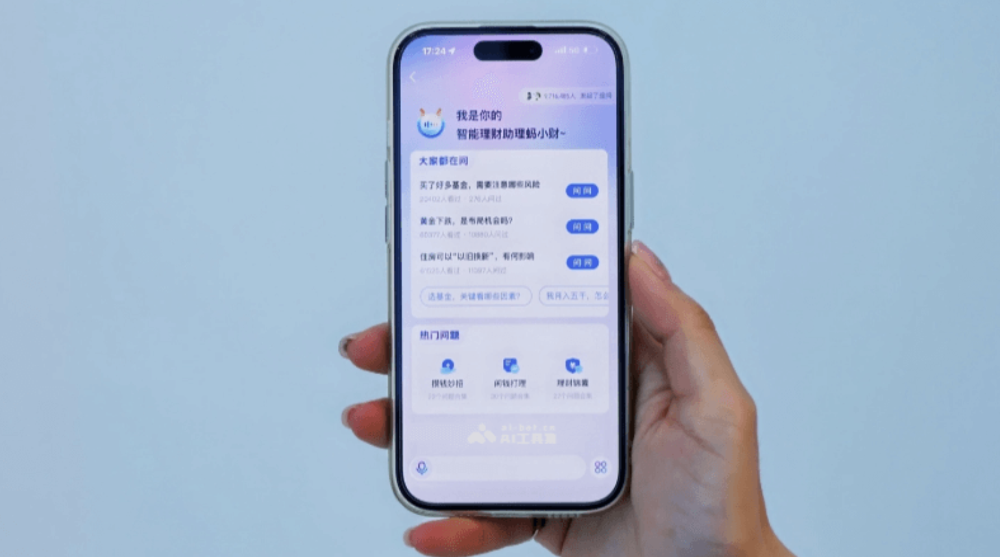

项目描述
- 构建投研投顾知识库（包括专家调研、市场分析报告，20+宏观分析框架、100+行业分析框架，20+商品分析框架等），通过prompt和RAG检索提升专业问题生成效果
- 构建市场、基金/股票产品、用户账户量化分析和诊断工具，通过function call调用
- 参与prompt和样本生产和改写，以及GC内容的打标和评测标准化，通过sft微调训练，提升生产内容的严谨性和一致性
- 协同运营，设计和改进全场景的问答铺设，增强对话引导（sug）等
项目成果
- AI助手可高精度回答市场异动解读、行情分析、基金诊断、个性化资产配置方案、用户收益分析和归因、基金推荐等专业问题，相关问题解决率提升到90%+（基座模型仅40%+）
- 相关内容深度聊天用户和采纳服务用户超百万，项目整体月活数千万级别